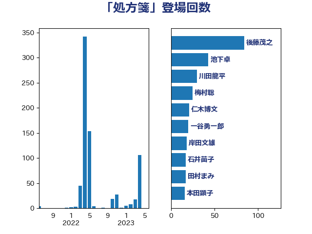

単語「処方箋」

| 後藤茂之 | 自由民主党 | 84 回 |
| 池下卓 | 日本維新の会 | 43 回 |
| 川田龍平 | 立憲民主党 | 30 回 |
| 梅村聡 | 日本維新の会 | 25 回 |
| 仁木博文 | 無所属 | 21 回 |
| 一谷勇一郎 | 日本維新の会 | 20 回 |
| 岸田文雄 | 自由民主党 | 18 回 |
| 石井苗子 | 日本維新の会 | 17 回 |
| 田村まみ | 国民民主党 | 17 回 |
| 本田顕子 | 自由民主党 | 16 回 |
| 田中健 | 国民民主党 | 15 回 |
| 野間健 | 立憲民主党 | 14 回 |
| 吉田統彦 | 立憲民主党 | 14 回 |
| 加藤勝信 | 自由民主党 | 14 回 |
| 森屋隆 | 立憲民主党 | 13 回 |
| 神谷政幸 | 自由民主党 | 12 回 |
| 石垣のりこ | 立憲民主党 | 12 回 |
| 山崎正恭 | 公明党 | 10 回 |
| 伊佐進一 | 公明党 | 9 回 |
| 芳賀道也 | 国民民主党 | 8 回 |
| 倉林明子 | 日本共産党 | 7 回 |
| 佐々木紀 | 自由民主党 | 7 回 |
| 遠藤良太 | 日本維新の会 | 6 回 |
| 東徹 | 日本維新の会 | 6 回 |
| 長谷川淳二 | 自由民主党 | 4 回 |
| 輿水恵一 | 公明党 | 4 回 |
| 宮本徹 | 日本共産党 | 4 回 |
| 中島克仁 | 立憲民主党 | 4 回 |
| 緒方林太郎 | 無所属 | 3 回 |
| 畦元将吾 | 自由民主党 | 3 回 |
| 金村龍那 | 日本維新の会 | 2 回 |
| 田村貴昭 | 日本共産党 | 2 回 |
| 松本尚 | 自由民主党 | 2 回 |
| 松島みどり | 自由民主党 | 2 回 |
| 星北斗 | 自由民主党 | 2 回 |
| 岡田直樹 | 自由民主党 | 2 回 |
| 宮口治子 | 立憲民主党 | 2 回 |
| 高橋千鶴子 | 日本共産党 | 1 回 |
| 阿部知子 | 立憲民主党 | 1 回 |
| 里見隆治 | 公明党 | 1 回 |
| 蓮舫 | 立憲民主党 | 1 回 |
| 竹内譲 | 公明党 | 1 回 |
| 福島みずほ | 社会民主党 | 1 回 |
| 石原宏高 | 自由民主党 | 1 回 |
| 石井啓一 | 公明党 | 1 回 |
| 田嶋要 | 立憲民主党 | 1 回 |
| 牧山ひろえ | 立憲民主党 | 1 回 |
| 浜野喜史 | 国民民主党 | 1 回 |
| 浜地雅一 | 公明党 | 1 回 |
| 橋本岳 | 自由民主党 | 1 回 |
| 杉尾秀哉 | 立憲民主党 | 1 回 |
| 山際大志郎 | 自由民主党 | 1 回 |
| 山田勝彦 | 立憲民主党 | 1 回 |
| 山口那津男 | 公明党 | 1 回 |
| 城井崇 | 立憲民主党 | 1 回 |
| 吉良よし子 | 日本共産党 | 1 回 |
| 吉田とも代 | 日本維新の会 | 1 回 |
| 仁比聡平 | 日本共産党 | 1 回 |
| 上田英俊 | 自由民主党 | 1 回 |
| たがや亮 | れいわ新選組 | 1 回 |